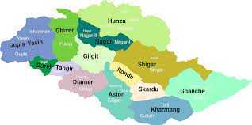

<!DOCTYPE html> 
<html>
</html>
    <head>
        <meta charset="utf-8">
      <title> All about Gilgit baldistan</title>
	  </h2></div></title>
	  <style>
	  
	  #head-phones {
	        color: white;  
	        background-color:rgb(0, 204, 102);
	        text-align: center;
			font-family: cursive;
	  }
	  </style>
	  </head>
	  <body>
	  <div id=head-phones><h2> Gilgit baldistan </h2>
	  
	  
	  <p>Gilgit-Baltistan is home to all five of Pakistan's <br>
	  "eight-thousanders" and to more than fifty peaks above <br>
	  7,000 metres (23,000 ft). Gilgit and Skardu are the two <br>
	  main hubs for expeditions to those mountains. The region is<br>
	  home to some of the world's highest mountain ranges.</p>
	  
	  
	  <br>
	 
	  
	
		  </div>